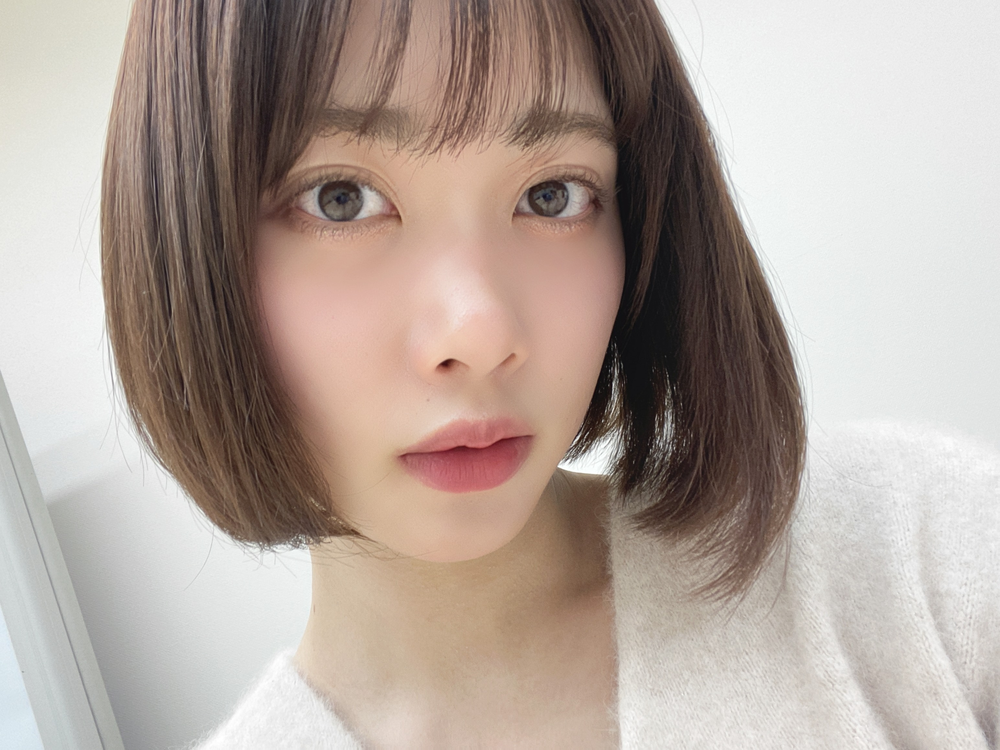
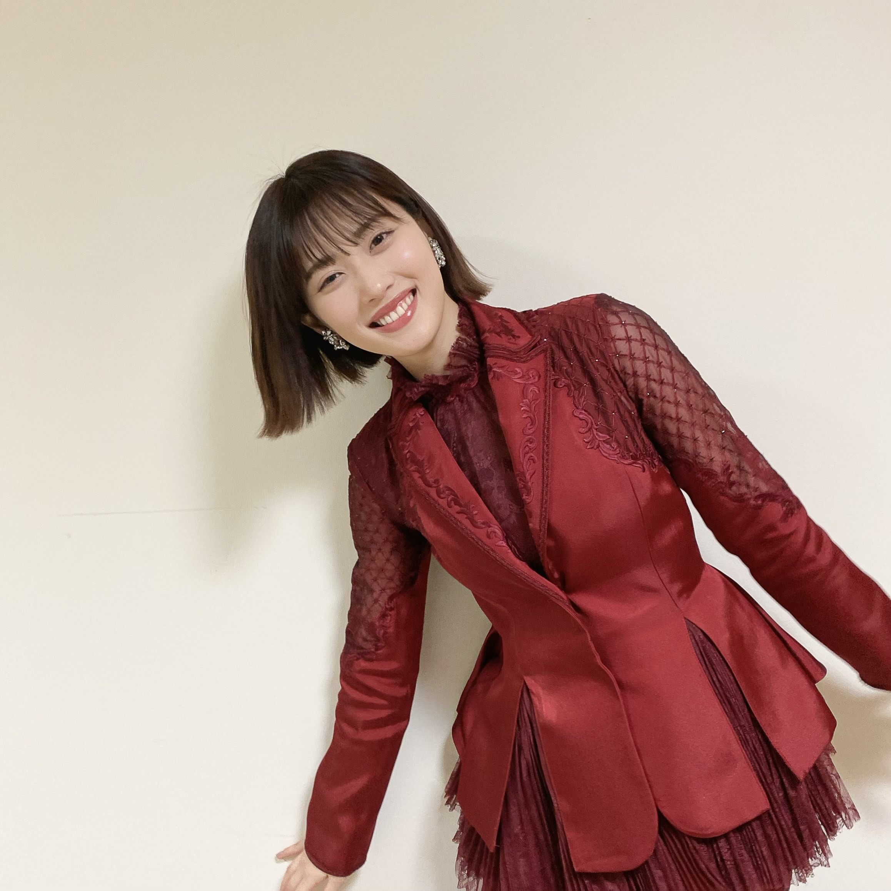

2021/0119Tueことしもがんばっていこう！
とっても遅くなりましたが
あけましておめでとう
ございます！今年もよろしく
お願い致します！

年末はレコ大紅白とまた１つ
素敵な思い出ができて幸せです♡
年始は久々に舞台がなかったので
ゆっくりでした！！逆になにしたら
いいのかわかりませんでしたꪔ̤̥

2021年もみなさま
よろしくお願いします！
健康第一！
ほんじつ
口ほどにもないKISSの
MVが公開されました♡
みんなの衣装がそれぞれ
かわいい！じゅんはパパ役です
衣装おしゃれだよね〜靴まで
かわいいから要チェック！


たくさん聞いてね〜
最近のじゅんなさんは
もともとベージュとか
ベビーピンクが好きだったけど
最近それが加速してて、
身の回りのものがぜんぶベビーピンクに
なりつつありますꪔ̤̥
癒されるよねえ
みんなは気づいたらこれ集めちゃってる
みたいなものある？？？
ミーグリもうすぐ！
たのしみ！！やった！！♡
まだ応募できるのかな？
待ってるね〜〜
2021/01/19 19:48
コメント(254)
MV見たよ~！！！！
パパ役純奈ちゃん可愛かったです！！！！
大好きーー！！
ふよう
パパ役純奈ちゃん可愛かったです！！！！
大好きーー！！
ふよう
じゅんなあけましておめでとう！今年もかつやくを楽しみにしてます！MVみたよー あれは結局きぃちゃんとあやねちゃんは駆け落ちして終わったんかな？いろいろなことを想像してしまうMVでした また何回かみて気づいて見たいと思います。
おめでとうございます。
今年、１回目のブログでしたか。
７５５とかインスタで見てるから、そん
なに久しぶりな感じはしないけど。
そうですね。じゅんなちゃんの舞台、そ
ろそろ観たくなってきました。
ＭＶ、そうなんですね。そんなに細部に
までこだわりが。再チェック再チェック。
気前の良さとか、とかく男前で語られる
事の多いじゅんなちゃんですが、ベビー
ピンクかぁ。部屋は乙女チックなのかな。
今年、１回目のブログでしたか。
７５５とかインスタで見てるから、そん
なに久しぶりな感じはしないけど。
そうですね。じゅんなちゃんの舞台、そ
ろそろ観たくなってきました。
ＭＶ、そうなんですね。そんなに細部に
までこだわりが。再チェック再チェック。
気前の良さとか、とかく男前で語られる
事の多いじゅんなちゃんですが、ベビー
ピンクかぁ。部屋は乙女チックなのかな。
あけましておめでとう！
2.7にミーグリとれたから今からワクワクです！
年末の純ちゃんほんとに可愛かった♡
今年もよろしくお願いします！
大好き
2.7にミーグリとれたから今からワクワクです！
年末の純ちゃんほんとに可愛かった♡
今年もよろしくお願いします！
大好き
じゅんなーブログ更新ありがとう〜！٩(ˊᗜˋ*)و
あけましておめでとう！
レコ大！！紅白！！めっちゃ良かったよー！(⊙ꇴ⊙)
レコ大と紅白の衣装がとっても似合ってて、特に紅白のロングパンツのスタイルがじゅんなちゃんにピッタリでとってもかっこよかった！
どちらの衣装も大好きです！
口ほどにもないKISSMVみたよー！
じゅんなちゃんは何着ても似合うんですか…？ほんとスゴすぎ…
めっちゃかっこいいし、めっちゃ似合ってます(๑o̴̶̷̥᷅﹏o̴̶̷̥᷅๑)
最初の曲始まる前、手紙を読みながらのじゅんなちゃんの悩ましげな表情すごく好き！笑
この衣装で踊ってるとこがまたかっこよくてかわいくて最高でした！(^o^)
なんの面白みもないけどやっぱりじゅんなのグッズ集めちゃうよね…笑
今はもうスマホで、気づいたら指でポチポチ…笑
そういう意味ではネットショッピングでいいものあったら片っ端から集めちゃってるかも！
以上、報告でした笑
ミーグリ楽しみです！(〃 'д'〃)و
今からもう待ち遠しいです！楽しみ楽しみ(((o( ˙꒳˙ )o)))
体調に気をつけてねー！
あけましておめでとう！
レコ大！！紅白！！めっちゃ良かったよー！(⊙ꇴ⊙)
レコ大と紅白の衣装がとっても似合ってて、特に紅白のロングパンツのスタイルがじゅんなちゃんにピッタリでとってもかっこよかった！
どちらの衣装も大好きです！
口ほどにもないKISSMVみたよー！
じゅんなちゃんは何着ても似合うんですか…？ほんとスゴすぎ…
めっちゃかっこいいし、めっちゃ似合ってます(๑o̴̶̷̥᷅﹏o̴̶̷̥᷅๑)
最初の曲始まる前、手紙を読みながらのじゅんなちゃんの悩ましげな表情すごく好き！笑
この衣装で踊ってるとこがまたかっこよくてかわいくて最高でした！(^o^)
なんの面白みもないけどやっぱりじゅんなのグッズ集めちゃうよね…笑
今はもうスマホで、気づいたら指でポチポチ…笑
そういう意味ではネットショッピングでいいものあったら片っ端から集めちゃってるかも！
以上、報告でした笑
ミーグリ楽しみです！(〃 'д'〃)و
今からもう待ち遠しいです！楽しみ楽しみ(((o( ˙꒳˙ )o)))
体調に気をつけてねー！
パパ役すごく似合ってましたー‼︎
今年もよろしくお願いします‼︎
今年もよろしくお願いします‼︎
焼き芋焼酎めっちゃ美味しかった！
杉良太郎さんからのやつもう飲んだ？
杉良太郎さんからのやつもう飲んだ？
純ちゃん、ブログを更新してくれてありがとう！(^^)
あけましておめでとう！
昨年末はレコ大＆紅白出演お疲れさま(^^)
気づいたら集めてるものかあ。
自分、乃木坂の応援と並行して、昔から好きな競走馬の応援をしたり写真を撮ったりするのが週末の趣味の１つになっていて、気づいたら乃木坂関連グッズと同じくらい、好きな競走馬の撮影写真や関連グッズも多くなってる事がよくあるよ
「口ほどにもないKISS」
のMVが遂にYouTubeで公開されたね！
いっぱい観て聴いていくよ(^^)
MV内のパパ役の純ちゃんのパフォーマンスを観るのもとっても楽しみ(^^)
今年も、純ちゃんのさらなる活躍を心から願いながら応援していくね٩(^‿^)۶
体調に気をつけながら活動してね
かわじん より
あけましておめでとう！
昨年末はレコ大＆紅白出演お疲れさま(^^)
気づいたら集めてるものかあ。
自分、乃木坂の応援と並行して、昔から好きな競走馬の応援をしたり写真を撮ったりするのが週末の趣味の１つになっていて、気づいたら乃木坂関連グッズと同じくらい、好きな競走馬の撮影写真や関連グッズも多くなってる事がよくあるよ
「口ほどにもないKISS」
のMVが遂にYouTubeで公開されたね！
いっぱい観て聴いていくよ(^^)
MV内のパパ役の純ちゃんのパフォーマンスを観るのもとっても楽しみ(^^)
今年も、純ちゃんのさらなる活躍を心から願いながら応援していくね٩(^‿^)۶
体調に気をつけながら活動してね
かわじん より
純奈ちゃんブログ更新ありがとう〜！！年末のレコ大、紅白で可愛い純奈ちゃんが見れて良かったです☺︎
口ほどにもないKISSのMV、純奈ちゃんパパ愛おしすぎました！！曲も衣装もMVもオシャレ！！毎日みるね☺︎☺︎☺︎
ミーグリ楽しみにしてます！！今からワクワクしてます！！
口ほどにもないKISSのMV、純奈ちゃんパパ愛おしすぎました！！曲も衣装もMVもオシャレ！！毎日みるね☺︎☺︎☺︎
ミーグリ楽しみにしてます！！今からワクワクしてます！！
じゅんな

最近みた映画は、
パラサイト
ゴーストバスターズ
８０日世界旅行
明けましておめでとうじゅんな
今年も、いい年になりますように
お互いに、

最近みた映画は、
パラサイト
ゴーストバスターズ
８０日世界旅行
明けましておめでとうじゅんな
今年も、いい年になりますように
お互いに、
じゅんなー！！ブログありがとう
口ほどにもないKISSのMVを観て、七色いんこの舞台を観に行った時のことを思い出しました！！
CDを買ったら何回もリピートしたいと思います！
CDを買ったら何回もリピートしたいと思います！
じゅんなさん可愛い！！
MV見たよ〜！！みんなとっても可愛かったです＼❤︎／
MV見たよ〜！！みんなとっても可愛かったです＼❤︎／
あけましておめでとう〜！
じゅんなパパさんめっちゃ好き…♡
今まで握手会行ったことなくて、今回のミーグリで初めましてなのすっごい楽しみ☺️
2021年が純奈ちゃんにとっていい1年になりますように〜！！
純奈ちゃん大好きー！！！
じゅんなパパさんめっちゃ好き…♡
今まで握手会行ったことなくて、今回のミーグリで初めましてなのすっごい楽しみ☺️
2021年が純奈ちゃんにとっていい1年になりますように〜！！
純奈ちゃん大好きー！！！
ミーグリ楽しみ〜！スイカうちわ見せるね♡
じゅんなちゃんあけましておめでとう☺︎
2021年もよろしくね〜！☺︎
レコ大と紅白お疲れ様でした！！☺︎
かわいかった〜！！！☺︎
口ほどにもないKISSのMV可愛くて好き！
曲も最高です！じゅんなちゃんかわいかった！！
パパ役似合ってた！！☺︎
もうすぐミーグリ楽しみ！！！
じゅんなちゃんよろしくね！！！☺︎
じゅんなちゃんだいすきです！☺︎
2021年もよろしくね〜！☺︎
レコ大と紅白お疲れ様でした！！☺︎
かわいかった〜！！！☺︎
口ほどにもないKISSのMV可愛くて好き！
曲も最高です！じゅんなちゃんかわいかった！！
パパ役似合ってた！！☺︎
もうすぐミーグリ楽しみ！！！
じゅんなちゃんよろしくね！！！☺︎
じゅんなちゃんだいすきです！☺︎
明けましておめでとうございます!
純奈ちゃん、あけましておめでとう今年もよろしくおねがいします。今年ずっと応援します大好きです
純奈ちゃんあけましておめでとう〜！
今年も純奈ちゃんがいっぱい活躍する姿が見たいです♡
口ほどにもないKISS
冒頭から怒ってる純奈ちゃんかわいかったよーーー！♡
衣装もめちゃお洒落でかっこいい！
そしてめちゃくちゃ似合ってる！！！
MVの世界観も好きだな〜
他のメンバーも配役合ってて良きだった！
純奈ちゃん体調に気を付けてね！
大好き♡♡
今年も純奈ちゃんがいっぱい活躍する姿が見たいです♡
口ほどにもないKISS
冒頭から怒ってる純奈ちゃんかわいかったよーーー！♡
衣装もめちゃお洒落でかっこいい！
そしてめちゃくちゃ似合ってる！！！
MVの世界観も好きだな〜
他のメンバーも配役合ってて良きだった！
純奈ちゃん体調に気を付けてね！
大好き♡♡
ブログありがとう！
パパ役、めっちゃ似合ってたー！笑
ずっとMV見てる〜〜〜〜
応援してるよ！頑張ってね〜^^*
パパ役、めっちゃ似合ってたー！笑
ずっとMV見てる〜〜〜〜
応援してるよ！頑張ってね〜^^*
じゅんな
やっほっ。
あけおめっ。
固定の色にハマるとそればっかり集めちゃう。
わかるわぁ。
自分もそうだもん。
やっほっ。
あけおめっ。
固定の色にハマるとそればっかり集めちゃう。
わかるわぁ。
自分もそうだもん。
純奈ちゃんブログ更新ありがとう！
あけましておめでとう！
年末はレコ大、紅白見たよ〜♪ありがとう！
口ほどにもないkissのMVも見たよ！
パパ純奈ちゃんかっこいい！衣装もバッチリ似合ってる！
またミーグリ行きますのでよろしくお願いします！
今年もよろしく！
あ、集めてるというかいつの間にか増えてるのはバイクのヘルメット(笑)
頭一つしかないのにデザインかっこいいとすぐ買っちゃう〜
あけましておめでとう！
年末はレコ大、紅白見たよ〜♪ありがとう！
口ほどにもないkissのMVも見たよ！
パパ純奈ちゃんかっこいい！衣装もバッチリ似合ってる！
またミーグリ行きますのでよろしくお願いします！
今年もよろしく！
あ、集めてるというかいつの間にか増えてるのはバイクのヘルメット(笑)
頭一つしかないのにデザインかっこいいとすぐ買っちゃう〜
純奈～あけましておめでとう～
年末の歌番組から年始の乃木坂三昧とかいろいろ楽しませてもらったよ～
口ほどにもないKISSの純奈のパパ役とても似合いすぎてた～
かわいい純奈もかっこいい純奈も大好きです！
舞台観に行ったら男役の純奈がたくさん見れるのかな？
一度でいいから行ってみたいな～
年末の歌番組から年始の乃木坂三昧とかいろいろ楽しませてもらったよ～
口ほどにもないKISSの純奈のパパ役とても似合いすぎてた～
かわいい純奈もかっこいい純奈も大好きです！
舞台観に行ったら男役の純奈がたくさん見れるのかな？
一度でいいから行ってみたいな～
純奈ちゃんおつかれさま！！
レコ大も紅白もとってもキラキラで可愛かった！
お姫様からパンツスタイルまでめっちゃ似合ってた〜！☺︎
口ほどにもないKISS最初から純奈ちゃんでめっちゃ嬉しかったし、かっこよかった！おしゃれで衣装も似合ってる！！
純奈ちゃんの服好き！ネイルも可愛い！
私はイヤリング集めちゃうかな〜！
ミーグリとっても楽しみです！よろしくね☺︎
体調に気をつけてね！！
レコ大も紅白もとってもキラキラで可愛かった！
お姫様からパンツスタイルまでめっちゃ似合ってた〜！☺︎
口ほどにもないKISS最初から純奈ちゃんでめっちゃ嬉しかったし、かっこよかった！おしゃれで衣装も似合ってる！！
純奈ちゃんの服好き！ネイルも可愛い！
私はイヤリング集めちゃうかな〜！
ミーグリとっても楽しみです！よろしくね☺︎
体調に気をつけてね！！
今年もいっぱいじゅんちゃんのこと応援するね～！
純奈ちゃんブログ更新ありがとう〜！
口ほどにもないKISS見たよ！！
衣装めちゃくちゃ似合ってる！！！！載せてくれた写真めっちゃカッコいい(*'▽'*)男役純奈ちゃん好きだな〜という気持ちになる笑
ボブも似合ってて本当カッコいい！！純奈ちゃん最高だよ〜〜
もう一回mv見てきます！！
こんなカッコよくて、可愛い純奈ちゃんと会えるの幸せ！！ミーグリ楽しみにしてます！
口ほどにもないKISS見たよ！！
衣装めちゃくちゃ似合ってる！！！！載せてくれた写真めっちゃカッコいい(*'▽'*)男役純奈ちゃん好きだな〜という気持ちになる笑
ボブも似合ってて本当カッコいい！！純奈ちゃん最高だよ〜〜
もう一回mv見てきます！！
こんなカッコよくて、可愛い純奈ちゃんと会えるの幸せ！！ミーグリ楽しみにしてます！
ブログ更新ありがとう ️ MV見たよ～良い曲だよね。えいぞうも良かった。ライヴで聞きたい❕
まだまだ、簡単に会えないですがですがそれまで楽しみに待ってます❗体調管理に気を付けてね
まだまだ、簡単に会えないですがですがそれまで楽しみに待ってます❗体調管理に気を付けてね
純奈さん、ブログ更新ありがとう！
新年あけましておめでとう！
今年も頑張ってね！
またね！
新年あけましておめでとう！
今年も頑張ってね！
またね！
純奈ちゃん、ブログ更新ありがとう‼
あけましておめでとう！
今年も一年よろしくね！！
ＭＶ見たよ！
めちゃくちゃ良かった！ ミュージカル調で新しい感じだった
いっぱい聴くね！！
愛媛県在住 中３女子 れいちゃんずより
追伸：今日も一日お疲れ様！！
あけましておめでとう！
今年も一年よろしくね！！
ＭＶ見たよ！
めちゃくちゃ良かった！ ミュージカル調で新しい感じだった
いっぱい聴くね！！
愛媛県在住 中３女子 れいちゃんずより
追伸：今日も一日お疲れ様！！
こんばんは。ブログ更新ありがとうございます。
あけおめことよろ。紅白は今回も全員出演できて、良かったです。
口ほどにもないのPV見ましたよ。楽曲もPVも良い出来ですね。特に曲は、表題曲にしても良いくらい素晴らしいです。リリースまであと1週間、楽しみです。
緊急事態宣言が再発令されちゃって、また舞台やコンサートが出来なくなってしまいました。ワクチン接種まであと少しの辛抱です。
ではまた。
あけおめことよろ。紅白は今回も全員出演できて、良かったです。
口ほどにもないのPV見ましたよ。楽曲もPVも良い出来ですね。特に曲は、表題曲にしても良いくらい素晴らしいです。リリースまであと1週間、楽しみです。
緊急事態宣言が再発令されちゃって、また舞台やコンサートが出来なくなってしまいました。ワクチン接種まであと少しの辛抱です。
ではまた。
あけおめ!今年も宜しく!応援してるよ!ところで杉良太郎さんから芋焼酎届いたのかな?凄い事だよ!気になったよ!
じゅんなちゃん、こんばんは。
新年あけましておめでとうございます。
じゅんなちゃん、こちらこそ今年もよろしくお願いします。
昨年の紅白歌合戦、僕は見たよ。録画しながら見ました。
Route246のパフォーマンス、めっちゃかっこよかったです。
圧巻のパフォーマンスでしたよ。
僕はちゃんとじゅんなちゃんを見つけれましたよ。
じゅんなちゃん、めっちゃ綺麗で、めっちゃかわいかったです。
昨年のレコード大賞も僕は見たよ。録画しながら見ました。
世界中の隣人よのパフォーマンス、とてもすてきでしたよ。
久しぶりに聴いても、とてもいい曲ですね。
口ほどにもないKISSのMV、僕は見たよ。とても楽しいMVですね。
お父さん役のじゅんなちゃん、めっちゃ綺麗で、めっちゃかわいかったです。
２６ｔｈシングル、僕は全タイプ絶対買うね。発売日がめっちゃ楽しみです。
じゅんなちゃん、体調に気をつけて仕事頑張ってね。
またコメントするね。
新年あけましておめでとうございます。
じゅんなちゃん、こちらこそ今年もよろしくお願いします。
昨年の紅白歌合戦、僕は見たよ。録画しながら見ました。
Route246のパフォーマンス、めっちゃかっこよかったです。
圧巻のパフォーマンスでしたよ。
僕はちゃんとじゅんなちゃんを見つけれましたよ。
じゅんなちゃん、めっちゃ綺麗で、めっちゃかわいかったです。
昨年のレコード大賞も僕は見たよ。録画しながら見ました。
世界中の隣人よのパフォーマンス、とてもすてきでしたよ。
久しぶりに聴いても、とてもいい曲ですね。
口ほどにもないKISSのMV、僕は見たよ。とても楽しいMVですね。
お父さん役のじゅんなちゃん、めっちゃ綺麗で、めっちゃかわいかったです。
２６ｔｈシングル、僕は全タイプ絶対買うね。発売日がめっちゃ楽しみです。
じゅんなちゃん、体調に気をつけて仕事頑張ってね。
またコメントするね。
じゅんちゃん^ - ^
MVかっこよかった！さすが純奈様
なんか、頭の中でずぅぅぅぅぅぅっと ♪口ほどにもな〜いって流れてる(苦笑)
りのもベビーピンク好き〜 ランドセル、ふちとせなかのとこ、ベビーピンクなの(o^^o)かわいいよね ベージュもすこ
すこ
りの
MVかっこよかった！さすが
なんか、頭の中でずぅぅぅぅぅぅっと ♪口ほどにもな〜いって流れてる(苦笑)
りのもベビーピンク好き〜 ランドセル、ふちとせなかのとこ、ベビーピンクなの(o^^o)かわいいよね ベージュもすこ
すこ
りの
ブログ更新ありがとう。ミーグリバッチリ応募したよ。めちゃくちゃ今から楽しみ。またバッチリコメ残すね。ナオッチ
こんばんな♪
明けましておめでとうです☀
レコ大～紅白感動しましたよ！
赤い衣装姿で優勝しましたね✨
アンダー新曲MVも素敵ですー！
パパ役とっても似合ってます✌
ベビーピンク可愛いらしいです！
私服姿もとっても楽しみですよ☆
ミーグリでもいっぱい披露してね☺
明けましておめでとうです☀
レコ大～紅白感動しましたよ！
赤い衣装姿で優勝しましたね✨
アンダー新曲MVも素敵ですー！
パパ役とっても似合ってます✌
ベビーピンク可愛いらしいです！
私服姿もとっても楽しみですよ☆
ミーグリでもいっぱい披露してね☺
あけましておめでとうございます！！ブログ更新ありがとう！
年末はレコ大に紅白に地上波で純奈を見つけることができる日が多くてとても嬉しかったです！家族は自分が純奈推しと言うのを知ってるので家族総出でテレビに食いついていました(笑) レコ大でソロでカメラに抜かれた時は勢い余って叫んでしまいました…。本当にお疲れ様です！
アンダー曲のMV見ました。セリフこそ無かったもののあの表情といい目力といい怒っているパパの迫力が伝わってきました。流石女優伊藤純奈です！葉月とのつかみ合いのシーンはちょっと怖かったです(笑)
2021年も伊藤純奈さんを引き続き全力で応援していきますので何卒よろしくよろしくお願いします！ミーグリも参加しますのでお話相手になっていただければなと思います。
寒い日が続くのでお体にはお気をつけください。今年の更なる飛躍をお祈りしてます！！
年末はレコ大に紅白に地上波で純奈を見つけることができる日が多くてとても嬉しかったです！家族は自分が純奈推しと言うのを知ってるので家族総出でテレビに食いついていました(笑) レコ大でソロでカメラに抜かれた時は勢い余って叫んでしまいました…。本当にお疲れ様です！
アンダー曲のMV見ました。セリフこそ無かったもののあの表情といい目力といい怒っているパパの迫力が伝わってきました。流石女優伊藤純奈です！葉月とのつかみ合いのシーンはちょっと怖かったです(笑)
2021年も伊藤純奈さんを引き続き全力で応援していきますので何卒よろしくよろしくお願いします！ミーグリも参加しますのでお話相手になっていただければなと思います。
寒い日が続くのでお体にはお気をつけください。今年の更なる飛躍をお祈りしてます！！
純奈ちゃんあけましておめでとう〜〜〜〜＾＾
MVみ！た！よ！ パパ役似合ってましたꪔ̤̥演技も素晴らしかったです（ ; ; ）❤︎❤︎❤︎
これから毎日見るね〜〜ん！
ミーグリで純奈ちゃんとお話しできるの楽しみすぎます！！！でも緊張の方がすごいです(笑)
ダイスキ〜〜〜〜☺︎
MVみ！た！よ！ パパ役似合ってましたꪔ̤̥演技も素晴らしかったです（ ; ; ）❤︎❤︎❤︎
これから毎日見るね〜〜ん！
ミーグリで純奈ちゃんとお話しできるの楽しみすぎます！！！でも緊張の方がすごいです(笑)
ダイスキ〜〜〜〜☺︎
純ちゃん更新ありがとう＼(^o^)／
初めてコメします。
年末くらいから純ちゃんのファンになりました！
純ちゃんの色んな動画見て毎日癒されてます
純ちゃんの美人なのにサバサバした性格に惚れました
My ruleの純ちゃんのハモリも好きです
これからも乃木坂や舞台のお仕事頑張ってください

コロナに気を付けてね！大好き～～
初めてコメします。
年末くらいから純ちゃんのファンになりました！
純ちゃんの色んな動画見て毎日癒されてます
純ちゃんの美人なのにサバサバした性格に惚れました
My ruleの純ちゃんのハモリも好きです
これからも乃木坂や舞台のお仕事頑張ってください
コロナに気を付けてね！大好き～～
じゅんなさん！！
更新ありがとうございます☆
久しぶりにコメントします！
私もベビーピンクとベージュが好きです！
なので私の周りにはベビーピンクとベージュがたくさんあります！
好きなものが似てる？気がして親近感湧きました☺︎
体調に気をつけて頑張ってください！！！！
更新ありがとうございます☆
久しぶりにコメントします！
私もベビーピンクとベージュが好きです！
なので私の周りにはベビーピンクとベージュがたくさんあります！
好きなものが似てる？気がして親近感湧きました☺︎
体調に気をつけて頑張ってください！！！！
今年も変わらず宜しくお願いします。ＭＶのお父さんお似合いでいいですよね。
ブログありがとう。あけましておめでとうございます。今年もよろしくお願いします。
年末は充実していたようでなによりです。
MVみました。パパ役演技さすがだなぁと何回も見直しています。
楽しそうなMVのメイキング見てみたいな！！！
自分のあつめているものはTシャツです。なぜか、冬でも夏でも半袖のTシャツを買ってしまう。好きなブランドのものが溢れかえってる
ミーグリで、生誕Tがまだ手元に無いと言ってましたが、生誕Tはとどきましたか？笑
ミーグリ楽しみに仕事がんばってます。
純奈ちゃん気をつけお過ごしください。
いつもありがとう。
年末は充実していたようでなによりです。
MVみました。パパ役演技さすがだなぁと何回も見直しています。
楽しそうなMVのメイキング見てみたいな！！！
自分のあつめているものはTシャツです。なぜか、冬でも夏でも半袖のTシャツを買ってしまう。好きなブランドのものが溢れかえってる
ミーグリで、生誕Tがまだ手元に無いと言ってましたが、生誕Tはとどきましたか？笑
ミーグリ楽しみに仕事がんばってます。
純奈ちゃん気をつけお過ごしください。
いつもありがとう。
純奈ちゃんブログ更新ありがとう！
あけましておめでとうございますヾ(๑╹◡╹)ﾉ"
年末はレコ大や紅白などお疲れ様でした！
純奈ちゃんの輝いてる姿がたくさん見れて幸せでした♪(๑ᴖ◡ᴖ๑)♪
口ほどにもないKISSのMVみました！
純奈パパ最高でした！！
いっぱい聴きたいと思います٩(๑❛ᴗ❛๑)۶
そろそろ純奈ちゃんの舞台が恋しくなってきました、、笑
まだまだ寒い日が続きますが体調に気をつけて頑張ってください！
純奈ちゃんにとって幸せなことがいっぱいの
良い一年になりますようにっ！！
あおい
あけましておめでとうございますヾ(๑╹◡╹)ﾉ"
年末はレコ大や紅白などお疲れ様でした！
純奈ちゃんの輝いてる姿がたくさん見れて幸せでした♪(๑ᴖ◡ᴖ๑)♪
口ほどにもないKISSのMVみました！
純奈パパ最高でした！！
いっぱい聴きたいと思います٩(๑❛ᴗ❛๑)۶
そろそろ純奈ちゃんの舞台が恋しくなってきました、、笑
まだまだ寒い日が続きますが体調に気をつけて頑張ってください！
純奈ちゃんにとって幸せなことがいっぱいの
良い一年になりますようにっ！！
あおい
あけましておめでとうございます！！
紅白もとってもかがやいてましたー
今年も応援させてくれてありがとう！沢山応援します☺️
MV面白可愛くてめっちゃすき〜
パパ役爆イケで衣装めっちゃ似合ってました！！
ミーグリ行くなぁーよろしくお願いします
紅白もとってもかがやいてましたー
今年も応援させてくれてありがとう！沢山応援します☺️
MV面白可愛くてめっちゃすき〜
パパ役爆イケで衣装めっちゃ似合ってました！！
ミーグリ行くなぁーよろしくお願いします
純奈ちゃんあけおめ〜！！
MV可愛くってたくさん見てる☺️
ぱぱぁ〜！！！！！
31のミーグリいくよん✌︎よろしくねっ
MV可愛くってたくさん見てる☺️
ぱぱぁ〜！！！！！
31のミーグリいくよん✌︎よろしくねっ
あらためて、あけましておめでとうございます！
阿呆浪士もう一年前の話になったなって思ったら、
なんか寂しくなる。
口ほどにもないKISSのMVもうみたよ！
このMVはとても面白かったから、たくさん見ようと思うんだ。
純奈のお父さん役はとても似合ってて
かっこいいんだよ～
また、すごく残念なことに、海外からミーグリ参加できないので、しばらく会えないと思う。
まだいつか日本に行けるようになったら、ね。
純奈ちゃんにとってすごく幸せな一年になりますように。
阿呆浪士もう一年前の話になったなって思ったら、
なんか寂しくなる。
口ほどにもないKISSのMVもうみたよ！
このMVはとても面白かったから、たくさん見ようと思うんだ。
純奈のお父さん役はとても似合ってて
かっこいいんだよ～
また、すごく残念なことに、海外からミーグリ参加できないので、しばらく会えないと思う。
まだいつか日本に行けるようになったら、ね。
純奈ちゃんにとってすごく幸せな一年になりますように。
純奈、ブログ更新ありがとう。どこにでもいるおっさんです。
レコ大よかったよ。
2期全員集合はまじエモい。
8thバスラ円盤全て見終わりましたよ。
純奈と史緒里さんの美人姉妹が優勝かな～。
ライブ神もよかったよ。
気づいたら、純奈の生写真を集めちゃってます。
今年も宜しくね。
ひでき
レコ大よかったよ。
2期全員集合はまじエモい。
8thバスラ円盤全て見終わりましたよ。
純奈と史緒里さんの美人姉妹が優勝かな～。
ライブ神もよかったよ。
気づいたら、純奈の生写真を集めちゃってます。
今年も宜しくね。
ひでき
MVでパパ役するなんて意外で驚いた パパ役だけど、衣装以外、男装することなく、かわいい純奈ちゃんのまんまでそれがまた良かったりもした☺️
ミーグリ行きます！楽しみ！ブログ更新ありがとう♡
可愛い可愛い可愛い可愛い可愛いいぃぃぃぃぃ


紅白でもレコ大でも純奈ちゃん見れて幸せだったヨ！
口ほどにもないkissのダンス踊ってるシーン可愛かった❤︎❤︎
今年は会えるといいなぁ！！